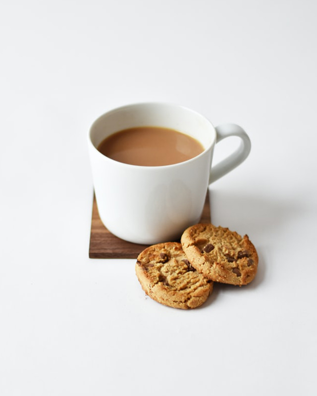

Value Added CTC Black Tea
Black Crush-Tear-and-Curl, or Cut-Tear-and-Curl (CTC) is a 100% oxidized tea that is characterized by its full body due to its maceration and oxidization of the leaf.
At our
tea farms, we pick only the topmost and succulent two leaves and a bud, to protect the integrity of the tea, despite it being machine processed.